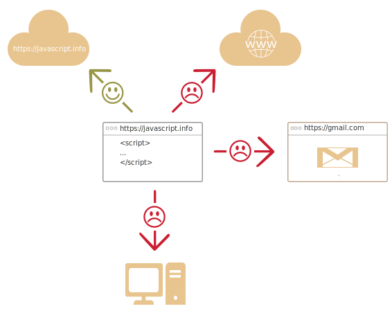

让我们来看看 JavaScript 有什么特别之处，我们可以用它实现什么，以及哪些其他技术可以与其搭配产生奇妙的效果。
JavaScript 最初被创建的目的是“使网页更生动”。
这种编程语言写出来的程序被称为 脚本。它们可以被直接写在网页的 HTML 中，在页面加载的时候自动执行。
脚本被以纯文本的形式提供和执行。它们不需要特殊的准备或编译即可运行。
这方面，JavaScript 和 Java 有很大的区别。
JavaScript 在刚诞生的时候，它的名字叫 "LiveScript"。但是因为当时 Java 很流行，所以决定将一种新语言定位为 Java 的“弟弟”会有助于它的流行。
随着 JavaScript 的发展，它已经成为了一门完全独立的语言，并且也拥有了自己的语言规范 [ECMAScript](http://en.wikipedia.org/wiki/ECMAScript)。现在，它和 Java 之间没有任何关系。如今，JavaScript 不仅可以在浏览器中执行，也可以在服务端执行，甚至可以在任意搭载了 JavaScript 引擎 的设备中执行。
浏览器中嵌入了 JavaScript 引擎，有时也称作“JavaScript 虚拟机”。
不同的引擎有不同的“代号”，例如：
上面这些术语很容易记住，因为它们经常出现在开发者的文章中。我们也会用到这些术语。例如，如果“V8 支持某个功能”，那么我们可以认为这个功能大概能在 Chrome 和 Opera 中正常运行。
引擎很复杂，但是基本原理很简单。
1. 引擎（如果是浏览器，则引擎被嵌入在其中）读取（“解析”）脚本。
2. 然后，引擎将脚本转化（“编译”）为机器语言。
3. 然后，机器代码快速地执行。
引擎会对流程中的每个阶段都进行优化。它甚至可以在编译的脚本运行时监视它，分析流经该脚本的数据，并根据获得的信息进一步优化机器代码。现代的 JavaScript 是一种“安全的”编程语言。它不提供对内存或 CPU 的底层访问，因为它最初是为浏览器创建的，不需要这些功能。
JavaScript 的能力很大程度上取决于它运行的环境。例如，Node.js 支持允许 JavaScript 读取/写入任意文件，执行网络请求等的函数。
浏览器中的 JavaScript 可以做与网页操作、用户交互和 Web 服务器相关的所有事情。
例如，浏览器中的 JavaScript 可以做下面这些事：
为了用户的（信息）安全，在浏览器中的 JavaScript 的能力是受限的。目的是防止恶意网页获取用户私人信息或损害用户数据。
此类限制的例子包括：
网页中的 JavaScript 不能读、写、复制和执行硬盘上的任意文件。它没有直接访问操作系统的功能。
现代浏览器允许 JavaScript 做一些文件相关的操作，但是这个操作是受到限制的。仅当用户做出特定的行为，JavaScript 才能操作这个文件。例如，用户把文件“拖放”到浏览器中，或者通过 <input> 标签选择了文件。
有很多与相机/麦克风和其它设备进行交互的方式，但是这些都需要获得用户的明确许可。因此，启用了 JavaScript 的网页应该不会偷偷地启动网络摄像头观察你，并把你的信息发送到 美国国家安全局。
不同的标签页/窗口之间通常互不了解。有时候，也会有一些联系。例如，一个标签页通过 JavaScript 打开另外一个标签页。但即使在这种情况下，如果两个标签页打开的不是同一个网站（域名、协议或者端口任一不相同的网站），它们都不能相互通信。
这就是所谓的“同源策略”。为了解决“同源策略”问题，两个标签页必须 都 包含一些处理这个问题的特定的 JavaScript 代码，并均允许数据交换。本教程会讲到这部分相关的知识。
这个限制也是为了用户的信息安全。例如，用户打开的 http://anysite.com 网页必须不能访问 http://gmail.com（另外一个标签页打开的网页）也不能从那里窃取信息。
JavaScript 可以轻松地通过互联网与当前页面所在的服务器进行通信。但是从其他网站/域的服务器中接收数据的能力被削弱了。尽管可以，但是需要来自远程服务器的明确协议（在 HTTP header 中）。这也是为了用户的信息安全。

如果在浏览器环境外（例如在服务器上）使用 JavaScript，则不存在此类限制。现代浏览器还允许安装可能会要求扩展权限的插件/扩展。
至少有 3 件事值得一提：
+ 与 HTML/CSS 完全集成。
+ 简单的事，简单地完成。
+ 被所有的主流浏览器支持，并且默认开启。JavaScript 是将这三件事结合在一起的唯一的浏览器技术。
这就是为什么 JavaScript 与众不同。这也是为什么它是用于创建浏览器界面的使用最广泛的工具。
此外，JavaScript 还可用于创建服务器和移动端应用程序等。
不同的人想要不同的功能。JavaScript 的语法也不能满足所有人的需求。
这是正常的，因为每个人的项目和需求都不一样。
因此，最近出现了许多新语言，这些语言在浏览器中执行之前，都会被 编译（转化）成 JavaScript。
现代化的工具使得编译速度非常快且透明，实际上允许开发者使用另一种语言编写代码并会将其“自动转换”为 JavaScript。
此类语言的示例有：
这样的语言还有很多。当然，即使我们在使用此类编译语言，我们也需要了解 JavaScript。因为了解 JavaScript 才能让我们真正明白我们在做什么。